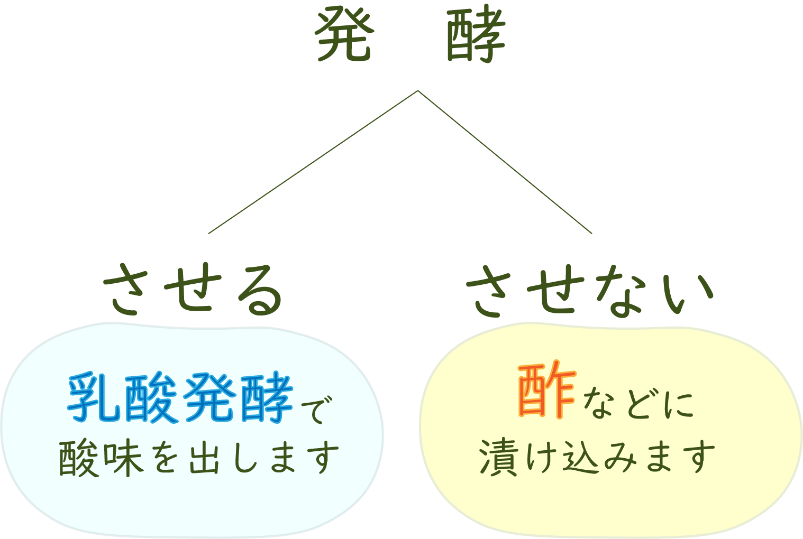
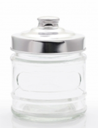

- 機能的
- サイズが豊富
- 入手が簡単
ピクルスとは
ピクルスは欧米を代表する酢を使った漬物です。
発酵させるものとさせないものの2種類があり、
発酵させないピクルスは酢などに漬け込みます。
発酵させるものは乳酸発酵をさせて酸味を出します。

日本の漬物との違いは？
ピクルス液を作るところです。
ピクルスを漬け込む液さえ作ってしまえば、
あとは簡単に様々なピクルスを作ることができます。
酢に漬けるピクルス3選
01
きゅうりのピクルス
香辛料をきかせた砂糖液に漬け込んだり、
ディルという香草と一緒に漬け込んだりしたものです。
中にはにんにくと一緒に漬け込む場合があります。
ハンバーガーに使われます。
02
レリッシュピクルス
砂糖液に漬け込んだものを細かく刻んだピクルスです。
ホットドッグのソーセージの上に散らします
03
オリーブのピクルス
ワインビネガーに漬け込んだものです。
カクテルのマティーニなどに添えられます
酢の効果
疲労回復
お酢の効果で良く耳にするのが
この「疲労回復」効果ではないでしょうか？
普段生活をしていると体には自然に
乳酸やピルビン酸などの疲労物質が蓄されていきます。
これらの疲労物質をピクルスの主成分である
酢酸が分解してくれるのです。
食欲増進
ピクルスを一口食べると心地よい
酸味と甘みが口一杯に広がっていきます。
その酸味が味覚や嗅覚を刺激して、
食欲をコントロールしている脳の摂食中枢に働きかけて
食欲がわいてくるという仕組みです。
ダイエット効果
ピクルスには体重を正常に保つようにコントロールしてくれる効果があります。
これは、体内の老廃物や有毒物質を取り除いてくれたり、アミノ酸が新陳代謝を高め体内に取り込んだ栄養分を消費するように働きかけるからです。
そして、脂肪分解の役割を持つ酵素リパーゼを活性化させて、悪玉コレステロールを分解し、余分な栄養分を分解して蓄積されるのを防ぐ働きを持っています。
保存瓶
おススメの保存瓶
ピクルスの保存におススメの容器は、
無印良品の「ソーダガラス密封ビン」です。
ガラスビンが厚手でしっかり密閉できます。

店舗所在地
- 無印良品 新宿店
- 住所 東京都新宿区新宿3-17-1